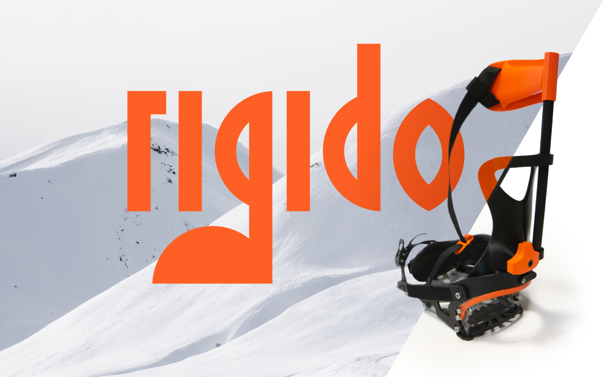

Rigido
Masteroppgave: Avstiver for splitboardbinding
2019
Som splitboarder går man ofte på topptur sammen med
skientusiaster som har randoneeutstyr. I bratte heng er
randoneeutstyr helt overlegent splitboardutstyr, noe som gjør at
splitboardere ofte blir fragått eller må jobbe dobbelt så hardt for å
henge med. Dette kan gå hardt utover den totale turopplevelsen for
splitboardere og det er motivasjonen bak denne oppgaven. Målet
var å finne en løsning som gjør at splitboardere kan ha en minst like
god toppturopplevelse som folk med randoneeutstyr, uansett
forhold.
Her kan du lese hele oppgaven:
Design av avstiver for
splitboardbinding
(Åpner PDF i ny fane)
Eeeeeller så kan du sjekke ut kortversjonen under.
Problemstillingen:
Snowboard gir deg en fleksibilitet og mobilitet som gjør at man får
følelsen av å surfe ned fjellsiden. Det er nettopp denne frihetsfølelsen
mange snowboardkjørere søker og som man ikke nødvenigvis får når
man kjører ski. For meg handler denne frihetsfølelsen om å mestre noe
som ikke faller naturlig, som å stå sidelengs ned et fjell. For å svinge
på snowboard, legger man tyngdepunktet bort fra kontaktpunktet man
har med bakken. Man må stole på at kreftene i svingen og friksjonen
mellom brettet og underlaget er store nok til at man ikke faller. For å få
til alt dette må bindingene være fleksible sideveis, samtidig som de er
stive/stabile bakover.
Utfordringen er at når man går på ski oppover vil man at disse
egenskapene skal byttes om. Man ønsker at bindingen skal være
fleksibel bakover for å kunne strekke foten helt ut i hvert steg, samt at
den skal være stiv/stabil sideveis for å kunne legge trykk på stålkanten
når man skal traversere/gå sikksakk i bratte fjellsider.

Det endelige resultatet ble et ekstrautstyr som man kan montere på
bindingssystemet til splitboardet sitt for å få bedre støtte i
krevende, bratte fjellseksjoner. Ekstrautsyret er designet for
splitboardere som ikke går de mest krevende toppturene, men som
vil kose seg på turen oppover og ønsker en morsom nedkjøring.